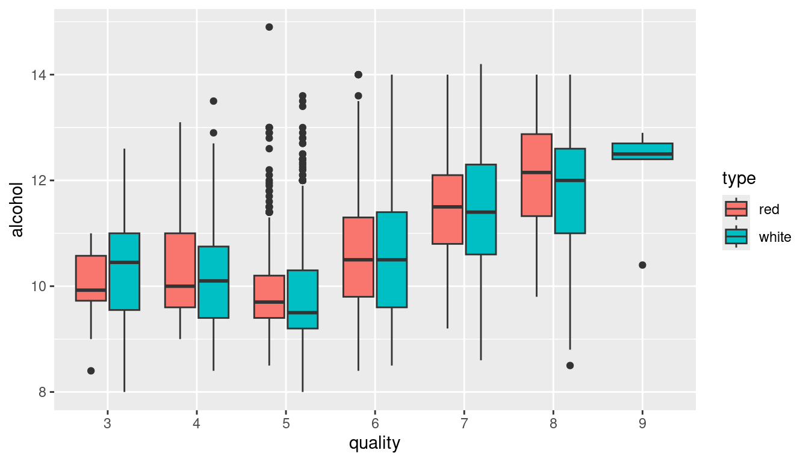

Investigating the relationship between age and number of children based on the gss_sm data set:
The socviz package contains a data set called gss_sm, which is a small subset of the questions from the 2016 General Social Survey (GSS). The GSS is a long-running survey of American adults that asks about a range of topics of interest to social scientists. To access this data set, start by installing and loading the socviz package.
Start by creating a simple scatter plot of age (on the x axis) against childs (on the y axis), i.e. illustrate how the number of children varies with age.
The plot from task b. suffers from overplotting, i.e. many data points are in the same position and overlap. To avoid this, see what happens when you set the position argument of the point geom to "jitter".
Now, add a smooth line describing the relationship between age and number of children into the plot.
Facet the plot by sex (rows) and race (columns).
Change the theme of the plot to theme_minimal. Also, add axis tick marks on the x axis every 10 years. Finally, choose your favourite colour from here and use its name to colour the points in the plot. Also set their size to 0.25 to make them smaller and further reduce the overplotting issue. Finally, label the axes with Age and Number of Children, respectively.
library(ggplot2)# a.# Install only if it has not been installed already:if(!require("socviz")) install.packages("socviz") library(socviz)# b.ggplot(gss_sm, aes(x = age, y = childs)) +geom_point()
# c.ggplot(gss_sm, aes(x = age, y = childs)) +geom_point(position ="jitter")
# f.ggplot(gss_sm, aes(x = age, y = childs)) +geom_point(color ="deeppink4", position ="jitter", size =0.25) +geom_smooth() +facet_grid(sex ~ race) +scale_x_continuous(breaks =seq(20, 80, by =10)) +labs(x ="Age", y ="Number of Children") +theme_minimal()
Analyzing the relationship between education and political views based on the gss_sm data set:
Create a frequency table of the degree variable and save it as a variable called degree_freqs. Turn it into a data.frame with column names degree and freq.
Use the degree_freqs object to create a bar plot indicating the absolute frequencies of the different levels of education in the data set.
Reorder the degrees in the bar plot to reflect the order of their absolute frequencies from highest to lowest. Also, relabel the axes to Education Level and Frequency, respectively.
Now, create a contingency table of the variables degree and polviews and save it as a variable called degrees_polview. Turn it into a data.frame with column names degree, polviews and freq.
Using degrees_polview, create a stacked bar plot of degree, where the fill aesthetic is used to indicate polviews. Afterwards, also create a bar plot of polviews, where the fill aesthetic is used to indicate degree.
Turn both bar plots from task e. into ones that show conditional relative frequencies instead of absolute frequencies to show the relationship between education and political views.
For the first of the two bar plots, add the title “Education and political views”, a subtitle “Data from the 2016 General Social Survey”, a caption “Source: socviz package”, appropriate axes labels and a header for the legend saying “Political views”. Moreover, choose a suitable color palette from the colorbrewer set and apply it to the graph. Finally, use theme_economist_white from the ggthemes package.
Finally, use the code you have already written to also have a look at the relationship between religion and polviews. For the most part, this should just involve some copying and pasting as well as adapting certain labels accordingly. Note that you have to create a new contingency table, of course.
# d.degrees_polview <-table(gss_sm$degree, gss_sm$polviews)degrees_polview <-as.data.frame(degrees_polview)names(degrees_polview) <-c("degree", "polviews", "freq")# e.ggplot(degrees_polview, aes(x = degree, y = freq, fill = polviews)) +geom_bar(stat ="identity")
ggplot(degrees_polview, aes(x = polviews, y = freq, fill = degree)) +geom_bar(stat ="identity")
# f.ggplot(degrees_polview, aes(x = degree, y = freq, fill = polviews)) +geom_bar(stat ="identity", position ="fill")
ggplot(degrees_polview, aes(x = polviews, y = freq, fill = degree)) +geom_bar(stat ="identity", position ="fill")
# g.library(ggthemes)ggplot(degrees_polview, aes(x = degree, y = freq, fill = polviews)) +geom_bar(stat ="identity", position ="fill") +labs(x ="Degree", y ="Relative frequency",title ="Education and political views",subtitle ="Data from the 2016 General Social Survey",caption ="Source: socviz package",fill ="Political Views") +scale_fill_brewer(palette ="RdBu", direction =-1) +theme_economist_white()
# h.religion_polview <-table(gss_sm$religion, gss_sm$polviews)religion_polview <-as.data.frame(religion_polview)names(religion_polview) <-c("religion", "polviews", "freq")ggplot(religion_polview, aes(x = religion, y = freq, fill = polviews)) +geom_bar(stat ="identity", position ="fill") +labs(x ="Religion", y ="Relative frequency",title ="Religion and political views",subtitle ="Data from the 2016 General Social Survey",caption ="Source: socviz package",fill ="Political Views") +scale_fill_brewer(palette ="RdBu", direction =-1) +theme_economist_white()
Analyzing the relationship between economic well-being and life expectancy for countries in the world in 2020 based on the gapminder data set:
In the course materials, you should find the data sets called gm_gdp.csv, gm_lex.csv, gm_pop.csv and gm_geo.csv. These data sets all stem from the Gapminder Project, a Swedish non-profit venture that promotes understanding of information about social, economic, and environmental development through the use of data visualization and statistics. Start by loading all these four data sets into R under the names of gdp, lex, pop and geo, respectively. Inspect these four data sets and familiarize yourself with their structure. Refer to gm_description.csv for additional information if you need it. Rename the following columns:
the fourth column of gdp to gdp_percap.
the third column of lex to time and the fourth column to life_expectancy.
the fourth column of pop to population.
Perform the following joins in the given order:
an inner join between columns 1, 3 and 4 of both gdp and lex on variables geo and time. Call the resulting object gm_df.
an inner join between gm_df and columns 1, 3 and 4 of pop on variables geo and time. Redefine gm_df as the resulting object.
an inner join between gm_df and columns 1, 2 and 3 of geo on variable geo. Redefine gm_df as the resulting object.
Verify that gm_df now has columns geo, time, gdp_percap, life_expectancy, population, name and four_regions.
We will start by illustrating the relationship between GDP per capita and life expectancy at birth in a single year. For this, create a data.frame called gm_df2020 that only includes data points from the year 2020. Using gm_df2020, then create a simple scatter plot of gdp_percap on the x axis and life_expectancy on the y axis.
In the plot, you can see a point at life_expectancy 0. This is because in the year 2020, we do not have life expectancy information for Hong Kong and Liechtenstein. The corresponding values are set to 0, which is not sensible. To avoid this being visible, we can simply restrict the plot range of the y axis. Set it, using scale_y_continuous, to the range from 40 to 95.
Another problem of this plot is that the GDP per capita spans a very wide range of values. To mitigate this for visualization, apply log2-scaling to the x axis. Hint: check the documentation for possible values to pass to the transform argument of the scale_x_continuous function.
To match the log2-scaling of the x axis, set the tick marks at powers of 2 starting from 256 and ending at 131,072.
Now, we want the size of the points to represent the sizes of the country populations. Add the corresponding aesthetic for population to your plot. Control the minimal and maximal sizes of the points via the range argument of scale_size_continuous, the minimum should be 0.5 and the maximum should be 20.
The big size of some points now means that many points are not visible due to overlap. To mitigate this, increase the transparency of the points by setting alpha to 0.4.
Next, it would be nice to represent the four world regions (Africa, Americas, Asia and Europe) by colour. Add the corresponding aesthetic for the variable four_regions and apply a suitable colorbrewer palette of your choosing.
Add the label GDP per capita (log scale) to the x axis and the label Life expectancy at birth to the y axis. Furthermore, add a title saying “Economic well-being and life expectancy”, a subtitle saying “Data from 2020” and a caption saying “Source: gapminder” to the plot. Rename the header of the legend for the world regions to World Region.
Finally, remove the guide for the size aesthetic and change the theme to theme_test.
# k.ggplot(gm_df2020, aes(x = gdp_percap, y = life_expectancy,size = population, color = four_regions)) +geom_point(alpha =0.4) +scale_x_continuous(breaks =2^(8:17), transform ="log2") +scale_y_continuous(limits =c(40, 95)) +scale_size_continuous(range =c(0.5, 20)) +scale_color_brewer(palette ="Dark2") +labs(x ="GDP per capita (log scale)",y ="Life expectancy at birth",title ="Economic well-being and life expectancy",subtitle ="Data from 2020",caption ="Source: gapminder",color ="World Region")
# l.ggplot(gm_df2020, aes(x = gdp_percap, y = life_expectancy,size = population, color = four_regions)) +geom_point(alpha =0.4) +scale_x_continuous(breaks =2^(8:17), transform ="log2") +scale_y_continuous(limits =c(40, 95)) +scale_size_continuous(range =c(0.5, 20)) +scale_color_brewer(palette ="Dark2") +labs(x ="GDP per capita (log scale)",y ="Life expectancy at birth",title ="Economic well-being and life expectancy",subtitle ="Data from 2020",caption ="Source: gapminder",color ="World Region") +guides(size ="none") +theme_test()
Analyzing the relationship between child mortality and total fertility rate over time based on the gapminder data set:
We will now merge additional data into the data.frame called gm_df created in exercise 3. First load the data sets gm_tfr.csv and gm_cm.csv into R under the names of tfr and cm. The first contains data on the total fertility rate (i.e. number of babies per woman) and the second contains data on child mortality (i.e. number of 0-5 year-olds dying per 1000 born children). After import, rename their fourth columns to tfr and cm, respectively.
Perform the following joins in the given order:
an inner join between gm_df and columns 1, 3 and 4 of tfr on variables geo and time. Redefine gm_df as the resulting object.
an inner join between gm_df and columns 1, 3 and 4 of cm on variables geo and time. Redefine gm_df as the resulting object.
Verify that the variables tfr and cm are now available in the data.frame called gm_df.
We want to look at the relationship between child mortality and total fertility rate in six years, namely 1800, 1900, 1930, 1950, 1980 and 2010. Restrict gm_df to only include data from these six years.
Create a scatter plot with cm on the x axis and tfr on the y axis. Facet the plot by time into a 2 x 3 grid using facet_wrap, such that each subplot represents one of the six years we have pre-selected.
Now, map four_regions and population to the color and size aesthetics, respectively, exactly in the same way as in exercise 3. To prevent too large points dominating the subplots, the only difference should be setting the maximum point size to 10.
This time, we want to be able to read off at least some of the individual countries from the plot. To do this, load the ggrepel package, map the name variable to the label aesthetic and use geom_text_repel with arguments size = 2 and max_overlaps = 15 to add the labels.
Label the plot appropriately and adapt the overall plot design to conform with the appearance of the final plot from exercise 3.
# d.gm_df <-subset(gm_df, time %in%c(1800, 1900, 1930, 1950, 1980, 2010))# e.ggplot(gm_df, aes(x = cm, y = tfr)) +geom_point() +facet_wrap(~ time)
# f.ggplot(gm_df, aes(x = cm, y = tfr,size = population, color = four_regions)) +geom_point(alpha =0.4) +scale_size_continuous(range =c(0.5, 10)) +scale_color_brewer(palette ="Dark2") +facet_wrap(~ time)
# g.library(ggrepel)ggplot(gm_df, aes(x = cm, y = tfr, label = name,size = population, color = four_regions)) +geom_point(alpha =0.4) +geom_text_repel(size =2, max.overlaps =15) +scale_size_continuous(range =c(0.5, 10)) +scale_color_brewer(palette ="Dark2") +facet_wrap(~ time)
# h.ggplot(gm_df, aes(x = cm, y = tfr, label = name,size = population, color = four_regions)) +geom_point(alpha =0.4) +geom_text_repel(size =2, max.overlaps =15) +scale_size_continuous(range =c(0.5, 10)) +scale_color_brewer(palette ="Dark2") +facet_wrap(~ time) +labs(x ="Child mortatility in deaths of 0-5 year-olds per 1000 births",y ="Total fertility rate (# babies / woman)",title ="Child mortality and total fertility rate over time",subtitle ="Data in the years 1800, 1900, 1930, 1950, 1980 and 2010",caption ="Source: gapminder") +guides(size="none") +theme_test()
Analyzing the relationship between chemical properties of wine and its perceived quality:
In exercise set II, you downloaded and imported the Wine Quality data sets from the UCI Machine Learning Repository. Import both of these data sets under the names white_wines and red_wines again. To both data.frames, add a column called type, which is white for all wines in the first one and red for all wines in the second one. Then, using the function rbind, combine the two data frames into one called wines. Finally, turn the variables quality and type into a factor.
First, we want to investigate the relationship between alcohol percentage of the wines and their sensory quality. Create parallel boxplots of the alcohol variable for all observed levels of the quality variable. Use the fill aesthetic to represent the two different types of wine.
Use coord_flip to have quality on the y axis and alcohol on the x axis.
Let’s represent the wines in appropriate colours. Use scale_fill_manual to manually adapt the colours of the fill aesthetic. One way to specify colours in R is with the help of so-called hex codes, use “#7B0323” for red wines and “#F1EAA3” for white wines. To make these colours visible, choose a theme with a white background, such as theme_test. Finally, label your plot appropriately.
Create further similar plots relating the wine quality to different chemical properties. In particular:
volatile.acidity. Try using a jitter geom instead of the boxplot geom. Experiment with the point size to reduce the overplotting issue.
sulphates. Try using a violin geom this time.
# a.white_wine_path <-file.path("../data", "winequality-white.csv")red_wine_path <-file.path("../data", "winequality-red.csv")white_wines <-read.csv2(white_wine_path, dec =".")red_wines <-read.csv2(red_wine_path, dec =".")white_wines$type <-"white"red_wines$type <-"red"wines <-rbind(white_wines, red_wines)wines$quality <-factor(wines$quality)wines$type <-factor(wines$type)# b.ggplot(wines, aes(x = quality, y = alcohol, fill = type)) +geom_boxplot()

# c.ggplot(wines, aes(x = quality, y = alcohol, fill = type)) +geom_boxplot() +coord_flip()
# d.wine_colors <-c("#7B0323", "#F1EAA3")ggplot(wines, aes(x = quality, y = alcohol, fill = type)) +geom_boxplot() +scale_fill_manual(values = wine_colors) +labs(x ="Quality score", y ="Alcohol (% vol.)",title ="Relationship between alcohol percentage and wine quality",subtitle ="Red and white vinho verde wine samples from the north of Portugal",caption ="Source: Wine Quality dataset UCI ML Repo",fill ="Type") +coord_flip() +theme_test()
# e.ggplot(wines, aes(x = quality, y = volatile.acidity, color = type)) +geom_jitter(size =0.25) +scale_color_manual(values = wine_colors) +labs(x ="Quality score", y ="Volatile acidity",title ="Relationship between volatile acidity and wine quality",subtitle ="Red and white vinho verde wine samples from the north of Portugal",caption ="Source: Wine Quality dataset UCI ML Repo",color ="Type") +coord_flip() +theme_test()
ggplot(wines, aes(x = quality, y = sulphates, fill = type)) +geom_violin() +scale_fill_manual(values = wine_colors) +labs(x ="Quality score", y ="Sulphates",title ="Relationship between sulphates and wine quality",subtitle ="Red and white vinho verde wine samples from the north of Portugal",caption ="Source: Wine Quality dataset UCI ML Repo",fill ="Type") +coord_flip() +theme_test()
Analyzing flipped counties by demographics in the 2016 US presidential election:
In the socviz package, there is a data set called county_data, which contains county-level data from the 2016 US presidential election. In this data set, the variable flipped indicates, whether a given county flipped to Republican or Democrat compared to the 2012 election. Start by creating a simple scatter plot of county population (pop) on the x axis and the percentage of black population (black/100) on the y axis, but only for the counties that did not flip in the 2016 election. Use a log10 scale on the x axis, color the points in grey and increase their transparency by setting alpha = 0.25.
Now, add points for the counties that did flip in the 2016 election. You do this simply by adding another point geom, but with its own data set and aesthetic mapping. Map the variable partywinner16 (indicating the party to which the county flipped in the election) to the color aesthetic and use the typical Republican and Democrat party colours (which is “#CB454A” for Republican and “#2E74C0” for Democrat) as the colours.
For nicely labeled tick marks, we can use the scales package. Having installed the package, load it and pass the function comma as the labels argument to scale_x_log10 and the function percent as the labels argument to scale_y_continuous. Notice how that changes the labels for the tick marks in the plot.
Add the following labels your plot:
x: County population (log scale)
y: Percent black population
title: Flipped counties, 2016
subtitle: Counties in grey did not flip.
caption: Source: socviz package
color: County flipped to…
Use a text_repel geom to label all counties that flipped and have a black population of more than 25% with a label indicating the state they belong to. Set the size of the text to 2. Finally, set the theme to theme_economist from the ggthemes package.
# a.ggplot(subset(county_data, flipped =="No"), aes(x = pop, y = black/100)) +geom_point(alpha =0.25, color ="grey") +scale_x_log10()
# b.party_colors <-c("#2E74C0", "#CB454A")ggplot(subset(county_data, flipped =="No"), aes(x = pop, y = black/100)) +geom_point(alpha =0.25, color ="grey") +geom_point(data =subset(county_data, flipped =="Yes"),mapping =aes(x = pop, y = black/100, color = partywinner16)) +scale_color_manual(values = party_colors) +scale_x_log10()
# c.library(scales)ggplot(subset(county_data, flipped =="No"), aes(x = pop, y = black/100)) +geom_point(alpha =0.25, color ="grey") +geom_point(data =subset(county_data, flipped =="Yes"),mapping =aes(x = pop, y = black/100, color = partywinner16)) +scale_color_manual(values = party_colors) +scale_x_log10(labels = comma) +scale_y_continuous(labels = percent)
# d.ggplot(subset(county_data, flipped =="No"), aes(x = pop, y = black/100)) +geom_point(alpha =0.25, color ="grey") +geom_point(data =subset(county_data, flipped =="Yes"),mapping =aes(x = pop, y = black/100, color = partywinner16)) +labs(x ="County Population (log scale)",y ="Percent Black Population",title ="Flipped counties, 2016",subtitle ="Counties in grey did not flip.",caption ="Source: socviz package",color ="County flipped to ... ") +scale_color_manual(values = party_colors) +scale_x_log10(labels = comma) +scale_y_continuous(labels = percent)
# e.ggplot(subset(county_data, flipped =="No"), aes(x = pop, y = black/100)) +geom_point(alpha =0.25, color ="grey") +geom_point(data =subset(county_data, flipped =="Yes"),mapping =aes(x = pop, y = black/100, color = partywinner16)) +geom_text_repel(data =subset(county_data, flipped =="Yes"& black >25),mapping =aes(x = pop, y = black/100, label = state),size =2) +labs(x ="County Population (log scale)",y ="Percent Black Population",title ="Flipped counties, 2016",subtitle ="Counties in grey did not flip.",caption ="Source: socviz package",color ="County flipped to... ") +scale_color_manual(values = party_colors) +scale_x_log10(labels = comma) +scale_y_continuous(labels = percent) +theme_economist()